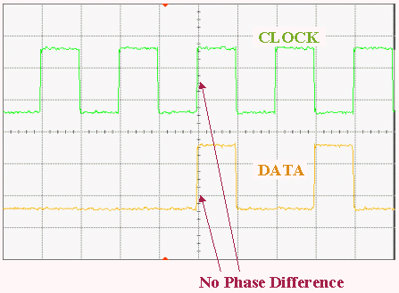

Signals with phase synchronization
Phase Flag ON
The following figure shows "Area A" in the figure in the section, Preventing Reload of Primary Sets for Clock Port with a higher resolution on the time scale. It illustrates the effect of the Phase flag set in the Spec Editor.

Note Phase synchronisation can, however, be quite time
consuming.
Functional changes
- Introduced before SmarTest 6.3.2